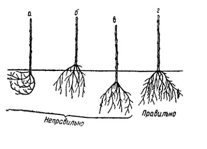

5 мая 2021 года наши специалисты засадили более 2-ух гектаров саженцев. К нам присоединилось более 30 новых волонтёров, которых успешно обучили всем тонкостям лесопосадки...
Смотреть полный отчёт
Вследствие зарастания лесов мягколиственными породами доля хвойных деревьев и кустарников в российских лесах снизилась.
Поэтому все чаще при восстановительных работах высаживаются именно хвойные культуры.
Одним из богатств России является лес. Именно лесные ресурсы называют «зеленым золотом», причем на нашу страну приходится более четверти запасов в мировом эквиваленте. Поэтому сохранение и приумножение лесов является основной задачей государства и лесного хозяйства.
По оценке экспертов лесное хозяйство будет процветать только в том случае, когда предприятия смогут пользоваться лесными ресурсами на долгосрочной основе, и если государство будет поддерживать отрасль.
Основными причинами гибели лесных культур являются:
Для эффективности лесовосстановительных мероприятий необходимо применять:
Лесовосстановительные работы могут производиться разными способами. Основными из них являются естественный, искусственный и комбинированный методы.

Такой метод применяется в основном в тайге и на территориях, где смена главных (ценных) пород культур маловероятна.
Естественный способ лесовосстановления применим, если имеется необходимое количество жизнеспособного подроста после рубки. Однако даже такая технология используется параллельно с комплексными лесовосстановительными работами.
Для лучшего и более быстрого восстановления леса после рубки оставляются подросты семенных культур и почва минерализуется.

При невозможности естественного восстановления насаждений или на небольших участках применяется искусственный метод восстановления. При этом подбирается главная порода и сопутствующие культуры, причем стоит учитывать их совместимость друг с другом.
Мы в «Изменим мир» применяем только качественные посадочные материалы для лесовосстановления. В нашей работе по восстановлению лесов принимают участие волонтеры, в команду которых может записаться каждый желающий.
На пустырях механизированной техникой наши специалисты выравнивают почву, параллельно удаляя все сорняки, мусор и излишки грунта. Если местность болотистая или будущий лесной участок будет находиться в низине, то проводятся мелиоративные мероприятия, создается дренаж и подвозится почва.
Далее осуществляется геотопосъемка и на основании будущих условий произрастания составляется подробный дендрологический план. На выбор мы предлагаем качественные семена культур или привозим готовые насаждения из лучших питомников. В процессе работ мы сотрудничаем с региональными властями и местными специалистами в сфере выращивания растений.

В случае невозможности восстановления ценных пород естественным путем применяется комбинированное лесовосстановление. Такой способ является более простым и менее затратным, нежели искусственное восстановление лесного покрова.
Кроме того, комбинированное восстановление лесов можно осуществлять на волоках или погрузочных площадках.
Сравнение затрат при искусственном, естественном и комбинированном лесовосстановлении, руб./га
Основными проблемами лесовосстановления являются низкое качество лесовозобновления и нарушение биологического разнообразия лесов. «Изменим мир» соблюдает все законодательные нормы и с особой тщательностью проводит все работы по восстановлению лесных ресурсов. Поэтому, приступая к осуществлению лесовосстановительных процедур, мы проводим исследование типа пород, условий произрастания насаждений, состава грунта и многих других параметров.

Важность проведения работ по восстановлению лесов многие связывают с дефицитом древесины. Кроме того, все помнят летние пожары 2010 года, когда лесные покровы погибли на территории свыше 3 миллионов гектар. Именно тогда уже начались восстановительные мероприятия. Однако необходимый их объем до сих пор не выполнен.
Тем более что Россия является одним из самых крупных экспортеров древесины на мировом рынке. Поэтому для сохранения и приумножения лесных ресурсов необходимо не только своевременно принимать лесозащитные меры и восстанавливать их запасы, но и строго следовать лесным нормам.
Рассматривая лесопользование и лесовосстановление за 100 лет, а это возраст спелости сосны обыкновенной, можно увидеть, что картина не радует. В царские годы и при Советской власти вид и объемы вырубки не соответствовали допустимым нормам для естественного восстановления лесов.
По экспертным данным в Поволжье и Центрально-Черноземной зоне переруб составлял от 60%, на Юго-Востоке страны нормы вырубки превышали нормативы в 3,5 раза. Причем леса считались даровым благом и лесовосстановление практически не производилось. Вследствие этого леса начали истощаться и деградировать.
И только с 1948 года восстановлению лесов начали уделять внимание. Именно период с 1948 по 1980 годы экспертами признан расцветом лесного хозяйства. Несмотря на повышенные нормы вырубки и вывоза леса из страны, были разработаны и внедрены нормативно-правовые акты по лесопользованию, и как следствие, ответственность за восстановительные своевременные меры по восполнению лесных богатств.
Читать польностью
Рассматривая лесопользование и лесовосстановление за 100 лет, а это возраст спелости сосны обыкновенной, можно увидеть, что картина не радует. В царские годы и при Советской власти вид и объемы вырубки не соответствовали допустимым нормам для естественного восстановления лесов.
По экспертным данным в Поволжье и Центрально-Черноземной зоне переруб составлял от 60%, на Юго-Востоке страны нормы вырубки превышали нормативы в 3,5 раза. Причем леса считались даровым благом и лесовосстановление практически не производилось. Вследствие этого леса начали истощаться и деградировать.
И только с 1948 года восстановлению лесов начали уделять внимание. Именно период с 1948 по 1980 годы экспертами признан расцветом лесного хозяйства. Несмотря на повышенные нормы вырубки и вывоза леса из страны, были разработаны и внедрены нормативно-правовые акты по лесопользованию, и как следствие, ответственность за восстановительные своевременные меры по восполнению лесных богатств.

Однако этот период длился недолго и уже с 80-х годов деградация лесов продолжилась. Многие эксперты выражаются так: «Наши предыдущие поколения брали у нас лесные богатства взаймы, теперь мы берем их взаймы у наших детей и внуков, хотя сейчас мирное время».
Зарубежный опыт показывает, что частное и корпоративное владение лесными угодьями положительно повлияло на лесное хозяйство и качество лесов.
В России этот опыт негативно отразился на природных ресурсах. Поэтому, даже после введения законопроектов, разрешающих владение лесными участками, существуют немалые риски повторения отрицательной динамики.
Кроме того, принятый в 2006 году Лесной кодекс даже не содержит термин «лес». Он разрушил старую систему управления лесами, но не предложил новую политику.
Еще одной проблемой в лесовосстановлении служит то, что после модернизации и продажи перспективных сельскохозяйственных предприятий в России не хватает системных крупных игроков, которые бы поддерживали и контролировали состояние лесных ресурсов.
Не хватает грамотных специалистов главных и смежных профессий. Да, ежегодно выпускаются тысячи агрономов и прочих выпускников, однако рабочих мест нет – их количество сократилось в четыре раза.
Ну и кроме всего перечисленного, а также главных противников лесов (пожары, вредители, болезни и климатические условия) существуют еще «черные» лесорубы. Поэтому отказ от лесников добавил проблем лесному хозяйству. Многие эксперты сходятся во мнении, что лесников необходимо вернуть.

По данным Рослесхоза на 2017 год восстановлено 968 тысяч га, тогда как вырублено почти 98 миллионов гектар. Более свежие данные не предоставляются.
За все этот же 2017 год было заготовлено 212,4 млн. кубометров древесины. Хотя в России имеется 76,29 млн. га неиспользуемых сельхозземель, которые можно засадить лесом. Это около 4,5% от всей площади России или чуть больше площади Аргентины.
Посадка леса на этой территории позволит не только получить дополнительные 282, 237 млн. кубометров древесины в год, но и существенно снизить кислородное голодание в рядом расположенных городах.

Наш проект «Измени мир» принимает активное участие в восстановлении лесов России. Волонтеры, партнеры, а также неравнодушные граждане со всех уголков страны вносят пожертвования и сами осуществляют лесовосстановительные мероприятия.
В марте ООН объявила о десятилетии восстановления экосистем. По прогнозам организации к 2030 году планируется восстановить 350 миллионов гектар лесов. Однако предыдущий опыт показывает, что амбициозные планы могут не реализоваться.
В 2014 году члены ООН обещали сократить вырубку лесов в два раза к 2020 году. На самом же деле за этот период показатели не только не приблизились к прогнозируемым значениям, но и стали хуже – в 2018 году 3, 068 млн. га обезлесилось
Руководитель российского лесного отдела Гринписа Алексей Ярошенко утверждает, что ежегодно в России засаживается 1 млн. га. Однако в реальности эти цифры к лесовосстановлению не имеют никакого отношения...
Читать польностьюВ марте ООН объявила о десятилетии восстановления экосистем. По прогнозам организации к 2030 году планируется восстановить 350 миллионов гектар лесов.
Однако предыдущий опыт показывает, что амбициозные планы могут не реализоваться. В 2014 году члены ООН обещали сократить вырубку лесов в два раза к 2020 году. На самом же деле за этот период показатели не только не приблизились к прогнозируемым значениям, но и стали хуже – в 2018 году 3, 068 млн. га обезлесилось.
Руководитель российского лесного отдела Гринписа Алексей Ярошенко утверждает, что ежегодно в России засаживается 1 млн. га. Однако в реальности эти цифры к лесовосстановлению не имеют никакого отношения.
В 2014 году члены ООН обещали сократить вырубку лесов в два раза к 2020 году. На самом же деле за этот период показатели не только не приблизились к прогнозируемым значениям, но и стали хуже – в 2018 году 3, 068 млн. га обезлесилось
«Основная часть того, что учитывается как лесовосстановление — это так называемое естественное возобновление леса; меньшая часть (примерно одна шестая) — это искусственное лесовосстановление, то есть собственно посадка или в редких случаях посев, — рассказывает Ярошенко. — Дело в том, что лесовосстановление в понимании действующего законодательства — это только самая начальная стадия воспроизводства лесов, а чтобы она дала какой-то результат, нужен еще уход за молодым лесом в течение первых полутора-двух десятилетий его жизни. Если этого ухода нет, то и результат в подавляющем большинстве случаев не достигается — вырубки зарастают теми же деревьями, которыми они заросли бы сами (в основном березой и осиной), а высаженные сеянцы деревьев гибнут или безнадежно отстают в росте».
В России существует 76,29 млн. га неиспользуемых сельхозземель. Если эти территории засадить, то можно получить дополнительные 282, 237 млн. кубометров древесины в год. Поэтому лесовосстановительные мероприятия необходимо совмещать с высадкой лесов на пустых землях, не затрагивая «древние», где обитают редкие, вымирающие виды растений, птиц и животных.
Так, например, реликтовые леса служат прибежищем для филина, дикого северного оленя и орлана-белохвоста, которые занесены в Красную книгу.
Основными борцами с обезлесиванием все-таки считаются члены «зеленого» общества и добровольцы, работающие под эгидой российского отделения Гринписа. Они не только высаживают лес в национальных парках, например, в Куршской косе, Таганае и Угре, но и возводят лесные массивы на неиспользуемых сельхозземлях. Однако существуют и частные проекты.
Восстановлением лесов на территории России занимается Maraquia. Деятельность представителей этого проекта связана с лесовосстановлением в национальных парках страны.
Они взаимодействуют с лесничими и на основании указаний, где погибли или погибают деревья, пользователи выбирают территорию для посадки. Проект уже восстановил 100 тысяч деревьев. Лесничие после лесовосстановления и посадки осуществляют уход за деревьями в течение последующих пяти лет.
«Посади лес» за четыре года на пожертвования пользователей восстановил более 10 миллионов деревьев в 47 регионах России. Проект в основном занимается восстановлением лесов в Центральной части страны. Кроме пожертвований активистов в мероприятиях по спасению лесных массивов совместно с проектом участвуют представители бизнеса.
Наш проект «Измени мир» принимает активное участие в восстановлении лесов России. Волонтеры, партнеры, а также неравнодушные граждане со всех уголков страны вносят пожертвования и сами осуществляют лесовосстановительные мероприятия.
В Рослесхозе сообщают, что выбывание леса происходит по трем основным причинам: лесопромышленная вырубка, пожары и воздействие болезней и вредителей.
К 2024 году ведомство прогнозирует восстановление 100% баланса между выбытием и восстановлением леса.
Мероприятия по возобновлению лесных массивов происходит по нацпроекту «Экология» и федеральному проекту «Сохранение лесов».
Читать польностьюВ Рослесхозе сообщают, что выбывание леса происходит по трем основным причинам: лесопромышленная вырубка, пожары и воздействие болезней и вредителей.
К 2024 году ведомство прогнозирует восстановление 100% баланса между выбытием и восстановлением леса.
Мероприятия по возобновлению лесных массивов происходит по нацпроекту «Экология» и федеральному проекту «Сохранение лесов».
В Рослесхозе сообщают, что выбывание леса происходит по трем основным причинам: лесопромышленная вырубка, пожары и воздействие болезней и вредителей. К 2024 году ведомство прогнозирует восстановление 100% баланса между выбытием и восстановлением леса.
Мероприятия по возобновлению лесных массивов происходит по нацпроекту «Экология» и федеральному проекту «Сохранение лесов». Однако план посадок у каждого региона свой, поэтому говорить, насколько активно ведутся лесовосстановительные работы можно только после предоставления ежегодных отчетов из каждого субъекта РФ. То есть исходя из достижения годовых показателей.
В республике Ингушетия и в Ставропольском крае показатели достигли 100%-процентного выражения. Ростовская область выполнила план по посадке лесов на 87,5%. В республике Калмыкия выполнено было 82% запланированных лесовосстановительных мероприятий.
В рамках федерального проекта «Сохранение лесов» в 2020 году из бюджета было выделено более 6,7 млрд. рублей, из них:
Кроме того, отдельное внимание уделяется уходу за высаженными деревьями.
Однако кроме лесовосстановительных работ со стороны государства, частных проектов и благотворительных фондов необходимо создать условия для того, чтобы заинтересовать в возобновлении лесных массивов арендаторов территорий.
Многие хотят сэкономить и производят мнимую работу, якобы что-то сажается и за чем-то ухаживают. Однако на деле ничего не растет.
Эксперты уверены, что если создастся законодательная база и условия аренды лесными участками будут более требовательными, а деятельность арендаторов будет контролироваться, то лесовосстановление будет происходить в более масштабных объемах.
В России система лесных питомников долгое время была заброшена. В последние годы она начала восстанавливаться. Сейчас питомники находятся в ведении лесного хозяйства и их представители с волонтерами фактически выращивают посадочный материал.
Причем саженцы для восстановления лесов закупаются для проведения мероприятий в рамках различных проектов и акций именно в лесных питомниках. Активисты собирают средства на закуп посадочного материала и последующего агроухода за растущими деревьями. После чего волонтеры и члены различных фондов производят посадку растений.

Большинство россиян думает, что лес может восстанавливаться самостоятельно. Частично это правдивое мнение. Однако огромные площади вырубки лесов для сельского хозяйства, строительства и лесной промышленности будут возобн6овлять свои ресурсы не один десяток лет. Многие породы растут до взрослого состояния 60-100 лет.
Кроме того, это сложный процесс. Далеко не все сеянцы выживают, а даже те, кто пережил первый год жизни, могут погибнуть на следующем году взросления. Поэтому для более быстрого возобновления лесных ресурсов применяется искусственное восстановление лесов.
Только 20% лесов России восстанавливается естественным путем. Остальные же 80% состоят из посадок, осуществляемых искусственным способом. Площадь лесных питомников России составляет 50 тысяч га. Причем лесоводство – огромный опыт по выращиванию сеянцев и саженцев древесных и кустарниковых пород в естественноисторических условиях.
Одним из основоположников русского лесоводства является А. Т. Болотов (1738-1833). Он первым в отечественной литературе на основании собственного опыта разработал мероприятия по борьбе с эрозией почв и научную схему организации плодовых и лесных питомников, пропагандировал идеи посева и посадки леса, впервые сформулировал некоторые важные принципы лесоразведения.
Читать польностьюТолько 20% лесов России восстанавливается естественным путем. Остальные же 80% состоят из посадок, осуществляемых искусственным способом. Площадь лесных питомников России составляет 50 тысяч га. Причем лесоводство – огромный опыт по выращиванию сеянцев и саженцев древесных и кустарниковых пород в естественноисторических условиях.
Одним из основоположников русского лесоводства является А. Т. Болотов (1738-1833). Он первым в отечественной литературе на основании собственного опыта разработал мероприятия по борьбе с эрозией почв и научную схему организации плодовых и лесных питомников, пропагандировал идеи посева и посадки леса, впервые сформулировал некоторые важные принципы лесоразведения.
Способ подготовки и сроки посева семян определяют лишь время проявления отдельных морфологических признаков, продолжительность этапов морфогенеза и абсолютные значения качественных показателей сеянцев сосны и ели, не изменяя общего хода сезонного развития сеянца.
При благоприятном режиме увлажнения и оптимальных температурных условиях уже через 4-5 дней после посева семена наклевываются (для лиственницы — 2-3 дня, кедра — около 30 дней), зародышевый корешок трогается в рост.
После того, как корешок углубится в почву на 1,0-1,5 см (для кедра — 2-3 см) начинается рост гипокотиля (подсемядольного колена), выносящего семядоли на земную поверхность. Его интенсивный рост продолжается 16-20 дней для всех пород: до середины июня-начала июля в питомниках открытого грунта, и до второй половины мая в теплицах под полиэтиленовым покрытием.
К моменту окончания линейного роста гипокотиля семядоли освобождаются от семенных покровов и развертываются. Количество семядолей, как и длина гипокотильной части, не зависит от условий роста и, видимо, детерминировано наследственно. Для сеянцев ели их число 7-8, лиственницы — 6-7, кедра — 10.
В силу механических причин иногда семенные покровы защемляют распускающиеся семядоли и остаются на них вплоть до двухлетнего возраста растений. В таком случае развивающийся эпикотиль сначала деформируется, затем раздвигает две соседние семядоли, уходит между ними из-под семенных покровов, и, изгибаясь, начинает расти вверх.
Одной из основных биологических особенностей роста однолетних сеянцев является длительный период их вегетации. Так, например, однолетние сеянцы ели в питомнике открытого грунта и в теплице Сиверского лесхоза Ленинградской области заканчивают рост в высоту во второй половине августа-начале сентября. В это время однолетние .побеги взрослых деревьев уже прекратили рост и частично одревеснели. Сеянцы ели росли медленнее в теплице и в открытом грунте по сравнению с лиственницей.
Большое значение в деле интенсификации выращивания посадочного материала имеет выяснение влияния роли отдельных факторов внешней среды на рост. Вообще на рост влияет комплекс факторов, но один из них всегда более важен, чем остальные.
В условиях достаточного увлажнения таким фактором является термический режим, определяющий ход сезонных явлений. Температура в 4-5°С является биологическим минимумом вегетации.
Потребность растений в определенном количестве и сочетании питательных веществ детерминируется природой растения, его наследственностью.
Причем каждый минеральный элемент выполняет в растении присущие ему функции, главным образом этим определяется их содержание в различных тканях и органах растения. В тканях однолетних сеянцев сосны, ели, лиственницы и кедра содержится больше всего азота, значительно меньше — калия, а самый низкий уровень содержания характерен для фосфора.
Многочисленными зарубежными исследованиями установлено, что однолетние сеянцы очень чувствительны к изменению длины дня и при ее сокращении заканчивают рост и закладывают верхушечную почку. Таким образом, вне зависимости от сроков снятия покрытия с теплицы рост однолетних сеянцев прекратится при длине светового дня около 14-15 часов.
Морфогенез верхушечной почки обусловливается экологическими условиями среды. У растений в открытом грунте некоторое ускорение формирования верхушечной почки должно отмечаться после окончания периода роста сеянцев в высоту, то есть с середины августа. Однако в действительности почка формируется медленно и не достигает больших размеров.
В теплице, покрытие которой не снимается до октября, создается довольно ровный без резких снижений температуры микроклимат с несколько повышенными, по сравнению с окружающей средой, влажностью и температурой воздуха.
Эти условия благоприятствуют развитию верхушечной почки, и она формируется быстро, достигая при этом значительных размеров и приобретая темно-коричневую окраску. Пучок хвоинок на верхушке сеянца расходится, хвоя имеет темно-зеленый цвет и становится плотной, что свидетельствует об успешном ее вызревании. Морфогенез однолетних сеянцев в конце периода вегетации протекает наиболее успешно в теплице с неснятым покрытием.
Двухлетние сеянцы лиственницы начинают вегетацию после кедра, но до начала вегетации ели. В конце мая у сеянцев сосны и ели второго года жизни начинается рост хвои — основного ассимилирующего органа растения. У сосны интенсивный прирост хвои в длину начинается после полной остановки линейного роста стволика, у ели — в течение периода роста.
В течение вегетационного периода у двухлетних сеянцев сосны и ели происходит интенсивное развитие корневой системы. Корни растения не только углубляются в почву, но и осваивают жизненное пространство ее пахотного горизонта. При этом увеличивается число и длина боковых корней разных порядков.
У лиственницы в мае начинается рост корней первого порядка в длину, после периода относительного покоя в июне, в июле-августе идет активное новообразование и рост корней третьего-четвертого порядков, в конце сезона идет интенсивное приращение массы корней.
Семена кедра могут иметь разную степень развития:
В результате исследований особенностей роста и развития одно-, двухлетних сеянцев сосны, ели, лиственницы и кедра сибирского в условиях открытого грунта и в теплицах, а также анализа литературных данных выделены следующие этапы органогенеза сеянцев: прорастание семян, проростка, сеянца первого года жизни и сеянца второго года жизни.
В питомниках сеянцы могут расти до трех лет, однако выкопка посадочного материала производится в любой из периодов (1, 2 или 3 года). Лучше всего выкапывать саженцы за пять дней до посадки ранней весной пока не начался рост сеянца. Однако можно сажать и осенью после того, как листва спала.
Выкопка сеянцев производится ручной железной лопатой. Прием выкопки следующий: возле первой бороздки сеянцев на расстоянии 15 см производят канавку глубиной от 30 до 40 сантиметров, затем подрезают почвенный пласт на глубине от 25 до 30 см.
Затем, воткнув лопату в междурядье сеянцев, бережно отваливают пласт с сеянцами в сторону. Этот пласт разламывается на части и добытые из него сеянцы отделяются за корневую шейку друг от друга, избегая повреждения корней. Существуют специализированные механизмы для выкопки посадочного материала в крупных питомниках.
Выкопанные сеянцы подлежат сортировке. Существуют 3 группы – 1 сорт, 2 сорт и брак. Отлично развитые сеянцы, имеющие разветвленную мощную корневую систему, относятся к 1-му сорту. Первосортные сеянцы имеют прямые здоровые стебли, достаточно развитые побеги или охвоение, с нормально развитой верхушечной почкой.
2-ой сорт – здоровые сеянцы с хорошей корневой системой. Однако эти сеянцы менее развиты и корневая недостаточно разветвлена, а верхушечная почка имеет некое различие.
3-ий сорт сеянцев – худшие экземпляры. Они имеют плохо развитую корневую систему, хилые и тонкие стебли, отсутствие верхушечной почки, усыхание и повреждение. Такие сеянцы сажать запрещено.

Сеянцы первых и вторых сортов формируют в пучки количеством 100-200 штук и сохраняют до посадки. Необходимое условие во время выкопки и сортировки сеянцев состоит в том, чтобы предостеречь их от высыхания корневой системы.
Во избежание подобной проблемы необходимо производить выкопку посадочного материала в безветренную и пасмурную погоду. Пучки посадочного материала необходимо уложить рядами в устроенные в земле канавки с глубиной до 25 см. Пучки следует присыпать землей в наклонном положении. Таким же образом выполняют прикопку сеянцев осенью. Кроме этого их следует накрыть лапником или соломой.
Перевозить посадочный материал также необходимо в пасмурную погоду. Сформированные пучки (корнями друг к другу) укладывают в мешки или ящики. Дно емкостей необходимо застелить соломой или мхом. Сверху сеянцы освежают водой. На местах доставки, сеянцы необходимо сразу же освободить от обвязки и прикопать в тенистых местах. При этом следует полить корни водой.
Каждый желающий может высаживать деревья и кустарники на своем участке или около дома. Однако посадка растений в лесу является более сложным процессом.
Благотворительный фонд «Измени мир» в сотрудничестве с властями регионов восстанавливает леса по всей территории России. Для засаживания лесных участков мы используем высококачественный посадочный материал, как в виде семян и сеянцев, так и в виде саженцев из питомников. Причем устанавливая контакты со специализированными организациями, мы подбираем ту из них, которая находится в той же климатической зоне.
Предпочтение отдается аборигенным видам кустарников и деревьев, чтобы максимально точно воссоздать прежний лес. Для этого анализируются особенности окружающей среды: почвы, климата, рельефа. Если деревья погибли вследствие пожаров или воздействия вредителей мы механизированной техникой расчищаем территорию и готовим ее к высадке.
Читать польностьюКаждый желающий может высаживать деревья и кустарники на своем участке или около дома. Однако посадка растений в лесу является более сложным процессом.
Благотворительный фонд «Измени мир» в сотрудничестве с властями регионов восстанавливает леса по всей территории России. Для засаживания лесных участков мы используем высококачественный посадочный материал, как в виде семян и сеянцев, так и в виде саженцев из питомников. Причем устанавливая контакты со специализированными организациями, мы подбираем ту из них, которая находится в той же климатической зоне.
Предпочтение отдается аборигенным видам кустарников и деревьев, чтобы максимально точно воссоздать прежний лес. Для этого анализируются особенности окружающей среды: почвы, климата, рельефа. Если деревья погибли вследствие пожаров или воздействия вредителей мы механизированной техникой расчищаем территорию и готовим ее к высадке.
Семена, сеянцы или саженцы из питомников мы высаживаем, следуя лесовосстановительной технике. Причем перед перевозкой саженцев из питомников мы их подготавливаем особенно тщательно, чтобы не повредить корневую систему. Затем начинается высаживание культур. Правила посадки у каждого кустарника или дерева индивидуальные, наша команда строго следит за соблюдением инструкций.
В основном для посадки лесных культур используется меч Колесова или как его по-другому называют Сажальная меч Колесова. Это узкая стальная лопата для посадки сеянцев и саженцев лесных кустарников и деревьев. Для посадки каждый образца необходимы двое: один работает мечом Колесова, другой помещает сеянцы в щель и поправляет их.
Причем расположить сеяны или саженцы нужно таким образом, чтобы корневая система не была изогнута или повреждена. Кроме того, большое значение имеет глубина, на которую растения высаживаются. Иначе спустя год или раньше лесная культура погибнет.
После посадки за растениями на протяжении нескольких первых лет осуществляется агроуход. Выкашивается трава, идет прополка поросли берез и других деревьев.
Осина, ольха, рябина обгоняют в росте сосны, ели, дубы, и начинают их заглушать, затенять. Поэтому периодически восстанавливаемые участки подвергаются вспахиванию. Уход осуществляется на протяжении двух, трех и даже пяти лет в зависимости от пород высаженных растений.
Кроме того, все территории опахиваются во избежание возникновения лесных пожаров. Сухая трава – основная причина возгорания, поэтому лес защищается минерализованной полосой минимум в 1,5 метра, чтобы пожар не смог переметнуться в лес из населенных пунктов.
Быстрее всего после лесовосстановления появляются грибы и ягоды. На восстановленные лесные участки постепенно начинают возвращаться птицы и животные. Сначала прилетают птицы, гнездящиеся у поверхности земли. с появлением подлеска приходят ежи и зайцы. После того, как деревья вырастают до высоты 2-3 метра, в лес возвращаются косули, кабаны и лоси.

5 мая 2021 года наши специалисты засадили более 2-ух гектаров саженцев. К нам присоединилось более 30 новых волонтёров, которых успешно обучили всем тонкостям лесопосадки...
Смотреть полный отчётПрошёл ровно год спустя нашей лесопосадки возле жилого комплекса “Заречье”, Подмосковье, а это значит, что пришло время провести плановое вспахивание земель, чтобы наш труд...
Смотреть полный отчёт